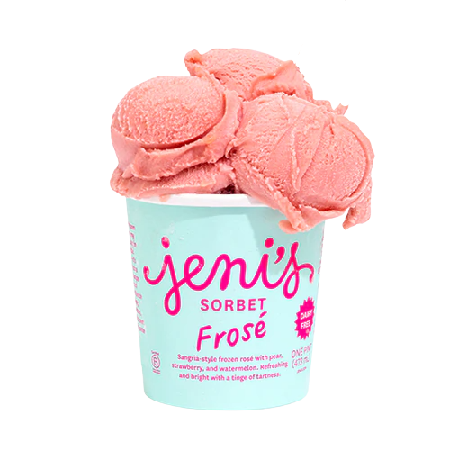

Share a scoop of happiness with Jeni's ice cream
Our ice creams have a uniquely smooth texture and buttercream body, with bright flavor and clean finish (we don’t use synthetic flavorings, dyes, or off-the-shelf mixes). You may notice the absence of a long list of stabilizers and emulsifiers on our label; we prefer the more complex process of building texture and flavor without them. Our flavors stand alone straight from the pint or melt perfectly into a fruit pie, birthday cake, crumble, crisp, or cookie—the perfect accessory for your dessert.
Learn more
